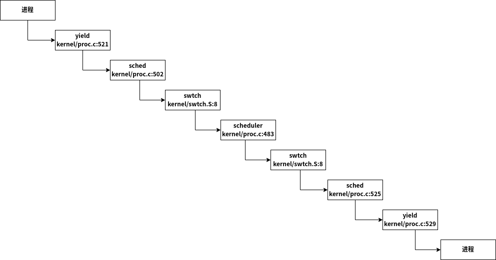

xv6-七
前言
这篇博客研究xv6的进程调度机制的实现
多进程
现代操作系统基本都支持并行多进程(多CPU多进程)，而要实现该功能，需要解决如下问题
- 如何切换进程？
虽然实现思路不是很难，但是实现细节比较复杂。 - 如何对用户进程透明？
即用户进程应该对于进程切换无感——进程切换前和进程切换后，进程的上下文不应有任何改变 - 如何找到当前CPU执行的进程的描述符？
进程可能被切换到任何CPU上，则CPU应当可以高效的找到当前执行的进程的描述符信息，从而在S-mode时更改当前进程的状态信息
进程切换
xv6的进程切换的基本流程如下图所示
可以看到，xv6实现进程切换的方式非常标准——首先从U-mode陷入到S-mode(系统调用或中断)，再从对应的S-mode切换到CPU切换进程(每个CPU在操作系统初始化时的执行流)。
接着就是上述步骤的反向操作，即切换到调度出的待切换进程的S-mode，然后从S-mode返回到U-mode，最终完成进程切换
进程调度时，进程首先陷入到S-mode，根据前面xv6-二可知，U-mode的上下文会保存在S-mode的内核栈中；当进程切换结束时，会从S-mode返回到U-mode，内核从进程的内核栈中恢复U-mode的上下文，从而还原到切换前的U-mode状态。这样的机制保证了对用户进程的透明
而进程切换最关键的代码则是swtch(kernel/swtch.S:8)，其将当前进程的S-mode的上下文保存，并载入调度选中的进程的S-mode的上下文并执行。这里需要注意的几个点是
- S-mode共享一个地址空间，所以无需更换页表，即可访问相关的虚拟地址资源
- 每一个进程的地址描述符(struct proc(kernel/proc.h:86)或struct cpu(kernel/proc.h:22))中包含struct context(kernel/proc.h:2)，用来保存被切换时进程S-mode的上下文信息
- 进程切换时，并不会保存或载入pc寄存器。其通过保存和载入ra寄存器，在进程从swtch返回时实现CPU执行流的切换
进程调度
正如上一节分析的，每次进程调度时，都涉及到CPU切换进程。实际上，CPU切换进程就是每个CPU在操作系统初始化时的执行流抽象的进程，其在_entry(kernel/entry.S:5)中构建进程的S-mode栈；其在main(kernel/main.c:44)中循环执行scheduler()，用来调度并切换进程。由于其特殊性质——每个CPU一个CPU切换进程，并且基本上仅仅用来调度进程，因此其不需要完整的进程描述符来表示，使用struct cpu(kernel/proc.h:22)的部分字段即可。
而一般的进程调度调用栈如下图所示

可以看到，从一个进程切换到另一个进程过程中，一共调用了两次swtch(kernel/swtch.S:8)。第一次调用为swtch(&p->context, &mycpu()->context)，即切换到CPU切换进程；第二次调用为swtch(&c->context, &p->context)，即从CPU切换进程切换到调度出的进程上下文。整体的逻辑还是非常清晰的。
其调度策略也很简单，循环遍历进程描述符数组，直到找到一个可被调度的进程即可
struct cpu
为了记录CPU独占的数据(如当前执行的进程描述符、CPU切换进程)，xv6使用struct cpu(kernel/proc.h:22)来管理。
其中，在S-mode地址空间中，包含元素为struct cpu的数组cpus(kernel/proc.c:9)，其包含了当前所有CPU的描述符。每个CPU可以以各自的hartid作为下标，访问对应的描述符。
这里需要注意的是，每个CPU的hartid只能在M-mode中访问。在S-mode中，xv6保证CPU对应的hartid会保存在其tp(thread pointer)中，可以通过mycpu(kernel/proc.c:59)来获取当前CPU对应的描述符。但是其应该在关闭中断时调用——否则在执行一般时可能发生进程调度，从而返回错误的结果
wake()/sleep()
类似于acquiresleep()/releasesleep()，操作系统提供了这一组函数，用于进程等待事件发生以及事件发生时唤醒等待进程。其实现如下所示1
2
3
4
5
6
7
8
9
10
11
12
13
14
15
16
17
18
19
20
21
22
23
24
25
26
27
28
29
30
31
32
33
34
35
36
37
38
39
40
41
42
43
44
45
46
47
48
49
50
51//kernel/proc.c
// Atomically release lock and sleep on chan.
// Reacquires lock when awakened.
void
sleep(void *chan, struct spinlock *lk)
{
struct proc *p = myproc();
// Must acquire p->lock in order to
// change p->state and then call sched.
// Once we hold p->lock, we can be
// guaranteed that we won't miss any wakeup
// (wakeup locks p->lock),
// so it's okay to release lk.
if(lk != &p->lock){ //DOC: sleeplock0
acquire(&p->lock); //DOC: sleeplock1
release(lk);
}
// Go to sleep.
p->chan = chan;
p->state = SLEEPING;
sched();
// Tidy up.
p->chan = 0;
// Reacquire original lock.
if(lk != &p->lock){
release(&p->lock);
acquire(lk);
}
}
// Wake up all processes sleeping on chan.
// Must be called without any p->lock.
void
wakeup(void *chan)
{
struct proc *p;
for(p = proc; p < &proc[NPROC]; p++) {
acquire(&p->lock);
if(p->state == SLEEPING && p->chan == chan) {
p->state = RUNNABLE;
}
release(&p->lock);
}
}
整体思路非常简单，sleep()即将当前进程的状态设置为SLEEPING，并释放传入的锁即可;wake()即将所有包含等待事件的进程状态设置为RUNNABLE即可
这里需要特别说明一下，在调用sleep()和wake()前，需要获取相应的自旋锁，避免部分等待进程会遗漏wake()。即当某一进程正在唤醒阻塞进程时，可能新的进程会准备阻塞，
Lab Multithreading
本次lab用来加深对于xv6的多进程机制理解
Uthread: switching between threads
要求
Your job is to come up with a plan to create threads and save/restore registers to switch between threads, and implement that plan. When you’re done, make grade should say that your solution passes the uthread test.
分析
实际上，用户态进程切换和操作系统的进程切换非常相似，但是更简单——因为这里的用户态进程不并行(这里的用户态下的多进程不会同时在两个CPU下执行)。
其进程切换就是将当前CPU的上下文保存到当前用户态进程的context中；载入被选中的用户态进程的context即可。
为了方便管理，直接将用户态进程的进程栈的底部当做该进程的context存储位置即可
实现
首先，在创建用户态进程时，提前设置好用户态进程的context，从而确保该进程在第一次被载入时，可以正常的执行回调函数1
2
3
4
5
6
7
8
9
10
11
12
13
14
15
16
17
18
19
20
21
22
23
24
25
26
27
28
29
30
31
32
33
34
35
36
37
38// user/uthread.c
// Saved registers for user context switches.
struct context {
uint64 ra;
uint64 sp;
// callee-saved
uint64 s0;
uint64 s1;
uint64 s2;
uint64 s3;
uint64 s4;
uint64 s5;
uint64 s6;
uint64 s7;
uint64 s8;
uint64 s9;
uint64 s10;
uint64 s11;
};
void
thread_create(void (*func)())
{
struct thread *t;
for (t = all_thread; t < all_thread + MAX_THREAD; t++) {
if (t->state == FREE) break;
}
t->state = RUNNABLE;
/*
* set the thread context's stack and ret address
*/
struct context *c = (struct context*)t->stack;
c->ra = (uint64)func;
c->sp = (uint64)(t->stack + STACK_SIZE);
}
接下来，则是当进行用户态的多进程调度时，完成进程的context的保存和恢复即可1
2
3
4
5
6
7
8
9
10
11
12
13
14
15
16
17
18
19
20
21
22
23
24
25
26
27
28
29
30
31
32
33
34
35
36
37
38
39
40
41
42
43
44
45
46
47
48
49
50
51
52
53
54
55
56
57
58
59
60
61// user/uthread.c
void
thread_schedule(void)
{
...
if (current_thread != next_thread) { /* switch threads? */
next_thread->state = RUNNING;
t = current_thread;
current_thread = next_thread;
// switch thread context
thread_switch((struct context*)t->stack,
(struct context*)current_thread->stack);
} else
next_thread = 0;
}
// user/uthread_switch.S
.text
/*
* save the old thread's registers,
* thread_switch(struct context *old, struct context *new);
* restore the new thread's registers.
*/
.globl thread_switch
thread_switch:
sd ra, 0(a0)
sd sp, 8(a0)
sd s0, 16(a0)
sd s1, 24(a0)
sd s2, 32(a0)
sd s3, 40(a0)
sd s4, 48(a0)
sd s5, 56(a0)
sd s6, 64(a0)
sd s7, 72(a0)
sd s8, 80(a0)
sd s9, 88(a0)
sd s10, 96(a0)
sd s11, 104(a0)
ld ra, 0(a1)
ld sp, 8(a1)
ld s0, 16(a1)
ld s1, 24(a1)
ld s2, 32(a1)
ld s3, 40(a1)
ld s4, 48(a1)
ld s5, 56(a1)
ld s6, 64(a1)
ld s7, 72(a1)
ld s8, 80(a1)
ld s9, 88(a1)
ld s10, 96(a1)
ld s11, 104(a1)
ret /* return to ra */
结果
执行如下命令，完成实验测试1
make GRADEFLAGS="uthread" grade
Using threads
要求
insert lock and unlock statements in put and get in notxv6/ph.c so that the number of keys missing is always 0 with two threads. The relevant pthread calls are:
2
3
4
pthread_mutex_init(&lock, NULL); // initialize the lock
pthread_mutex_lock(&lock); // acquire lock
pthread_mutex_unlock(&lock); // release lockYou’re done when make grade says that your code passes the ph_safe test, which requires zero missing keys with two threads.
分析
当多个进程同时在哈希表中插入时，则由于条件竞争，会导致部分插入的键-值对丢失——最简单的例子，假如两个进程同时插入一个键相同但值不同的键-值对，当他们同时执行到insert函数时，必然会有一个进程覆盖掉另一个进程的插入。
那么解决办法很简单，就是在可能产生条件竞争的操作上上锁就行。
实现
由于put函数可能同时读、写同一个键-值对，则在该函数中上锁即可1
2
3
4
5
6
7
8
9
10
11
12
13
14
15
16
17
18
19
20
21
22
23
24
25
26// notxv6/ph.c
pthread_mutex_t locks[NBUCKET];
static
void put(int key, int value)
{
int i = key % NBUCKET;
pthread_mutex_lock(&locks[i]);
// is the key already present?
struct entry *e = 0;
for (e = table[i]; e != 0; e = e->next) {
if (e->key == key)
break;
}
if(e){
// update the existing key.
e->value = value;
} else {
// the new is new.
insert(key, value, &table[i], table[i]);
}
pthread_mutex_unlock(&locks[i]);
}
结果
执行如下命令，完成实验测试1
make GRADEFLAGS="uthread" grade

Barrier
要求
Your goal is to achieve the desired barrier behavior. In addition to the lock primitives that you have seen in the ph assignment, you will need the following new pthread primitives; look here and here for details.
pthread_cond_wait(&cond, &mutex); // go to sleep on cond, releasing lock mutex, acquiring upon wake up
pthread_cond_broadcast(&cond); // wake up every thread sleeping on condMake sure your solution passes make grade’s barrier test.
分析
即每次调用barrier函数时，阻塞当前进程，直到被阻塞进程的个数等于用户态多进程个数为止，由最后一个进入的进程唤醒所有进程即可。
这里特别需要注意的是pthread_cond_wait函数对于mutex参数的操作——在进入前，mutex需要已经被获取，然后在标记用户态进程被阻塞后释放，并直到被唤醒后再次获取锁
一轮barrier的进程同步情况如图所示
实现
即按照前面的分析，首先获取mutex互斥锁，然后根据当前阻塞在barrier的进程个数，睡眠或唤醒，并在最后释放掉mutex互斥锁即可1
2
3
4
5
6
7
8
9
10
11
12
13
14
15
16
17
18
19
20
21
22
23
24
25
26
27
28// notxv6/barrier.c
static void
barrier()
{
pthread_mutex_lock(&bstate.barrier_mutex);
/*
* if ++bstate.nthread != nthread, there still some
* thread has not reached the barrier, so this
* thread should wait
*
* if old_nthread == nthread, thread is the last
* to reach the barrier, it should wake other
* thread
*/
if(++bstate.nthread == nthread) {
++bstate.round;
bstate.nthread = 0;
pthread_cond_broadcast(&bstate.barrier_cond);
}else
pthread_cond_wait(&bstate.barrier_cond,
&bstate.barrier_mutex);
pthread_mutex_unlock(&bstate.barrier_mutex);
}
结果
执行如下命令，完成实验测试1
make GRADEFLAGS="barrier" grade